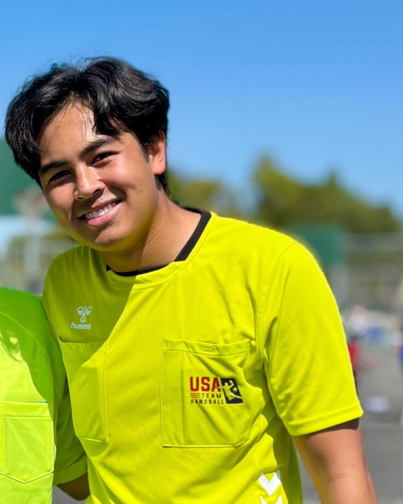

USA Team Handball, National Referee Committee
No referee, no game.
Two people with a whistle make every match possible. The NRC recruits them, trains them and puts them on the court. Start here.

USA Team Handball, National Referee Committee
Two people with a whistle make every match possible. The NRC recruits them, trains them and puts them on the court. Start here.

Leagues, tournaments and championships only run with certified referees on the court.
Fair, safe and consistent games come from referees who know the IHF rules and work as a pair.
Level 1 to Level 3, then NACHC and the IHF. Every game you work is a step, with feedback recorded here.
A short form. A committee member calls you back.
Six online modules on your phone, ten minutes at a time.
Theory passed is recorded the moment you pass; the practical part follows at a clinic.
Paired with an experienced referee, observed, supported.
Your profile, the weekends you can work, your assignments, the feedback from observers and your training results by rule. A 50 question assessment at first sign in builds your personal program.
One request with dates, venue and what you cover. The NRC proposes the pairs, confirms them and sends you the designated list with their travel details.
The NRC's goal: every active USATH club with a certified pair of its own. Clubs nominate two members, the NRC assigns a mentor and the training path, and the pair gets observed at a tournament before certification.
Is your club on the wrong side of this? Write to referee@handballusa.org.